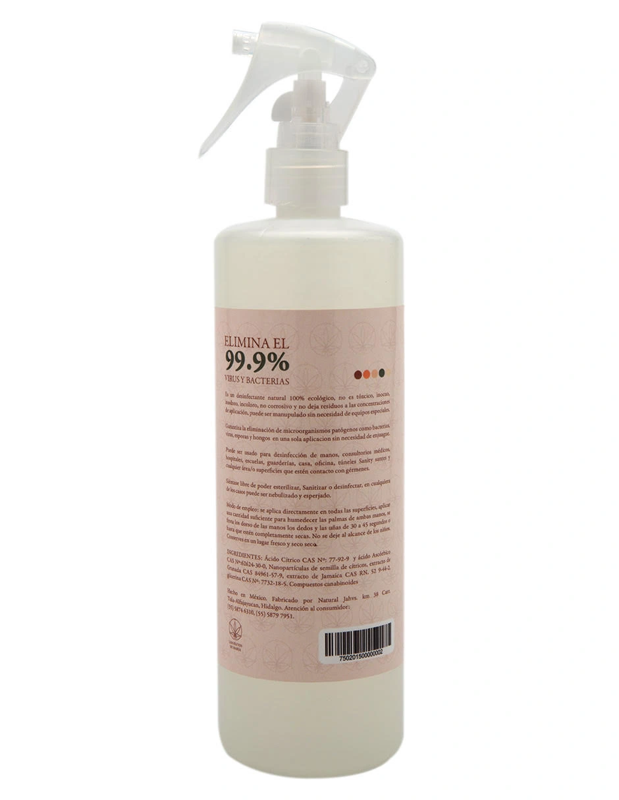

Liverpool
Liverpool
 Suburbia
Suburbia
Beneficios
Por qué elegirlo
🦠
Elimina el 99.9% de gérmenes
Protección eficaz contra virus y bacterias en cualquier momento.
💧
Hidrata y suaviza
Contiene aloe vera para evitar la resequedad común del alcohol.
⏱️
Secado rápido
Se absorbe rápidamente sin dejar sensación pegajosa ni residuos.


Instrucciones
Para las manos
- Aplica una pequeña cantidad del sanitizante en la palma.
- Frota hasta que estén completamente secas.
- Abarca yemas, dorso de las manos y entre los dedos.
Instrucciones
Para superficies
- Rocíe el sanitizante directamente sobre la superficie.
- Deje que el producto se seque al aire libre para máxima eficacia.
- Ideal para mesas, escritorios y objetos de uso diario.
Fórmula
Ingredientes
- Alcohol etílico al 70%
- Aloe vera
- Glicerina y propilenglicol
- Carbopol y trietanolamina
- Fenoxietanol, parabenos y germabenes
- Fragancia suave
Detalles
Especificaciones
- Contenido neto: 500 ml
- Fabricado por: Natural SACV
- Origen: Camanu Tla Maya Ray, Maysan, Hidalgo CP 42180, México
- Portabilidad: Portátil y fácil de usar en diversas áreas.
Nuestra Recomendación
El Desinfectante Los Frutos de María es un producto de excelente calidad ideal para personas que buscan un sanitizante eficaz y gentil con la piel. Si está buscando un aliado antibacteriano para protegerse de los gérmenes de forma diaria (tanto para manos como diversas superficies), este desinfectante es una gran opción para personas de todas las edades.
Precauciones
- Solo para uso externo. No ingiera el producto.
- Evite el contacto con los ojos. En caso de contacto, enjuague con abundante agua.
- Mantener fuera del alcance de los niños.
- Almacenar en un lugar fresco y seco, alejado de fuentes de calor.
Protección para tu día a día
Consigue el Desinfectante Los Frutos de María 500 ml en nuestros puntos de venta.